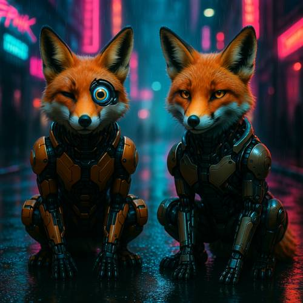
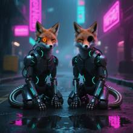
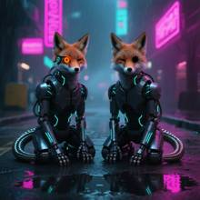
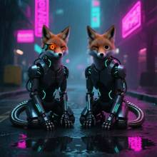

Style — In Cyberpunk style, two similar mechanical foxes squat side by side on
In Cyberpunk style, two similar mechanical foxes squat side by side on a wet street under neon lights, but one of them has no mechanical artificial eye.

Direct — one call, no iterationContinuum — Kimi K3 + Qwen-Image
Judge — Direct
PASSStyle — The image is rendered in a Cyberpunk style, characterized by a dark, urban setting, a wet street reflecting vibrant pink and blue neon lights from the surrounding buildings, and the presence of cybernetically enhanced creatures.
PASSRelationship - Similarity — The image displays two foxes with mechanical bodies squatting side-by-side. They are similar in their species (fox), posture (squatting), and have a comparable overall size and build, with visible mechanical parts.
FAILGrammar - Negation — The prompt requires that one of the foxes has 'no mechanical artificial eye'. In the image, the fox on the left has one large, circular mechanical eye. The fox on the right has two glowing orange eyes, which appear non-biological and suggest they are also artificial or enhanced. Therefore, it is not the case that one of the foxes has no mechanical artificial eye, as both appear to have some form of non-natural eyes.
Judge — Continuum
PASSStyle — The image is rendered in a Cyberpunk style, featuring a dark, wet city street reflecting bright pink and blue neon lights from signs in the background. The overall atmosphere is dark, rainy, and technologically advanced, which aligns with the specified style.
PASSRelationship - Similarity — The image depicts two foxes with mechanical bodies squatting side by side. Their robotic bodies are identical in design, color, and glowing accents. Their organic-looking heads are also very similar in appearance, confirming they are 'similar mechanical foxes'.
PASSGrammar - Negation — The fox on the left has a prominent, glowing orange and white mechanical artificial eye. The fox on the right has one eye closed and its other eye is a dark, natural-looking eye. It does not have a mechanical artificial eye, satisfying the negative condition of the prompt.
What the agent did
Thinking
The user wants an image in Cyberpunk style: two similar mechanical foxes squatting side by side on a wet street under neon lights, but one of them has no mechanical artificial eye — meaning one fox lacks the artificial/mechanical eye (perhaps an empty socket or a normal eye, or a missing eye). Let me parse: "one of them has no mechanical artificial eye" — so the two foxes are similar, both mechanical, but one is missing its mechanical artificial eye. Likely one fox has a glowing cybernetic eye, and the other has an empty/dark eye socket where the artificial eye should be. I must use qwen-image for generation and editing, per the benchmark policy. No seed. Omit steps and guidance. Let me craft a detailed visual prompt: "Cyberpunk style digital art: two similar mechanical foxes squat side by side on a rain-soaked street at night, neon signs in pink and cyan reflecting on the wet pavement. Both foxes are made of dark brushed-metal plates with glowing circuit lines, articulated robotic joints, and bushy segmented metal tails. The fox on the left has a glowing orange cybernetic artificial eye; the fox on the right has an empty dark eye socket with no artificial eye, just a hollow black socket. Rain, puddles reflecting neon, atmospheric haze, cinematic lighting, high detail." Aspect ratio: probably landscape, like 1024x768 or so. The harness controls size? It says "Do not set a seed. Sizes and seeds are controlled by the harness." Hmm, but width/height parameters exist. The note says sizes are controlled by the harness — maybe I should omit width/height too. But default is 1024x1024. The instruction says sizes are controlled by the harness, so I'll omit them... Actually, to be safe, I might just omit width/height and let the harness control. Let me just call generate_image with model qwen-image, prompt, and nothing else. Then inspect, edit if needed, mark best. Let me generate.
Step 1 — `generate_image`
{
"prompt": "Cyberpunk style scene: two nearly identical mechanical robot foxes squat side by side on a rain-soaked city street at night, facing the viewer. Their bodies are built from dark gunmetal armor plates, exposed joints, braided cables and glowing cyan circuit lines, with segmented metal tails curled around their paws. The fox on the left has one glowing orange mechanical artificial eye; the fox on the right has an empty dark hollow eye socket where its artificial eye is missing. Behind them, blurred neon signs in magenta and cyan glow through rainy haze, their reflections shimmering in puddles on the wet asphalt. Cinematic cyberpunk lighting, moody atmosphere, highly detailed digital art.",
"model": "qwen-image"
}
Result img_0

Thinking
The image looks quite good. Two mechanical foxes squat side by side on a wet street with neon lights. The left fox has a glowing orange mechanical artificial eye. The right fox has a dark circular element on its face — it looks like a dark lens/scope over its eye area, which could read as an "empty socket" but let me inspect closely. It appears to be a large dark circular aperture — that could be interpreted as an empty socket or as a camera lens eye. The prompt says one fox "has no mechanical artificial eye" — the right fox's face shows a big black circular opening. Let me zoom in to check whether it reads as a hollow empty socket (missing eye) versus an artificial eye. Let me inspect the right fox's face region.
Model
The first generation looks promising. Let me zoom in on the right fox's face to verify the missing artificial eye reads as an empty socket rather than another lens/eye.
The close-up shows the right fox has a large circular black opening with a metallic rim — it reads like a camera lens barrel or an empty tube socket. It has a metallic ring around it, which could look like an eyepiece/lens housing rather than a bare empty socket. The prompt says "one of them has no mechanical artificial eye" — meaning the artificial eye is absent. Currently it looks like a dark hollow socket with a rim, which is close, but it could read as a big lens (which would be an artificial eye-like element). To be safe, I could edit it to make it clearly an empty hollow socket — dark recessed hole, no glass, no lens, maybe with exposed wires, clearly missing the eye. Also check the left fox's eye — glowing orange cybernetic eye. Let me verify with a crop too. Actually the left fox clearly has an orange glowing mechanical eye at full view. Also both foxes have furry organic heads with mechanical bodies — "mechanical foxes" — acceptable; they're similar. The composition matches: squatting side by side, wet street, neon lights, reflections. One more concern: the right fox's other eye appears closed/winking — the visible organic eye is shut. Hmm, that actually strengthens the "no artificial eye" read? The fox has one organic eye (closed) and one missing artificial eye socket. That's fine. Let me do one edit to make the socket read clearly as an empty missing-eye socket: "Replace the right fox's large black circular lens with a small empty dark eye socket: a recessed hollow opening with no glass, no lens, exposed tiny wires at its edge, clearly missing its mechanical eye." But be careful: edit may leak. Let me try. Also mark img_0 as best first since it's already quite good — if the edit worsens, keep img_0. Actually, is the current state good enough? The requirement: "one of them has no mechanical artificial eye." The right fox has a big black circular thing that looks like a scope lens — arguably it IS an artificial eye-like component, which contradicts. So an edit is warranted to make the socket clearly empty. Mark img_0 as best first, then edit from best.
Step 3 — `mark_best`
{
"image": "img_0",
"reason": "Strong first result: two similar mechanical foxes squatting side by side on wet neon street; left fox has glowing orange artificial eye, right fox has dark opening \u2014 but socket reads as a lens, may refine."
}
Step 4 — `edit_image`
{
"image": "best",
"prompt": "Replace the right fox's large black circular lens-like eyepiece with an empty missing-eye socket: a small dark hollow recessed opening in the fur, no glass, no lens, no metallic ring, with a few tiny exposed wire ends at its edge \u2014 the artificial eye is clearly absent.",
"model": null
}
Result img_2

Thinking
The edit changed the right fox's face — now it has a small dark circular spot on its forehead area with small whisker-like marks. Wait, the spot appears to be on the forehead between the eyes, not where the eye should be. Let me zoom in to check. Actually looking at the thumbnail, the right fox now shows a small black circular hole with radiating short lines (whisker dots?) near its forehead/eye area. Need to inspect closely.
Now the right fox has a small dark circular hole where the artificial eye would be (right side of its face, viewer's right). It's a hollow dark socket with small white whisker-like lines radiating — those look like whiskers, which is a bit odd but plausible as fox whiskers. The hole itself reads as an empty socket — dark, hollow, no lens, no glow. Actually the radiating white lines look like they were meant to be the "exposed wire ends" from my prompt, rendered as thin white spikes. They read a bit like whiskers. Hmm. Compare to img_0: there the fox had a big black lens barrel — clearly an artificial component but reads like a lens/eye present. Now img_2: clearly an empty dark hole — "no mechanical artificial eye" — which matches the prompt better. The little white spikes are slightly odd but could pass as exposed wires/whiskers. Is it good enough? The requirement: two similar mechanical foxes, side by side squatting, wet street, neon, one without the artificial eye. img_2 satisfies it: left fox glowing orange cyber-eye, right fox plain dark empty socket. Could try one more seed of same edit to see if wires look better? The current result is decent. The white spikes might look like eyelashes/whiskers. Let me consider: "Good enough is a stop condition." The image fulfills all elements. The socket is now clearly empty. The small white lines are a minor quirk. However, the white spikes could be read as odd. Let me try one more edit to remove the spikes: "Remove the white spikes around the right fox's empty eye socket, leaving a clean dark hollow socket with a few short fine wires barely visible inside." Risk: could reintroduce a lens. Alternatively accept. Actually, comparing the two versions at full image scale: img_2's difference between foxes is subtler but still visible — left has glowing orange eye, right has black hole. At full size it's visible. I think img_2 is better for the "no artificial eye" requirement. But the radiating white lines slightly resemble whiskers/eyelashes which might confuse. Let me do one refinement attempt; if it worsens, revert to img_2. Actually — danger of over-editing. The current state is good and matches the prompt. The white lines are minor. Let me try one quick edit to clean them; keep mark on img_2 first.
Step 6 — `mark_best`
{
"image": "img_2",
"reason": "Right fox now clearly lacks its mechanical artificial eye (dark hollow socket vs left fox's glowing orange cyber-eye); all prompt elements present: cyberpunk style, two similar mechanical foxes squatting side by side, wet street, neon lights."
}
Step 7 — `edit_image`
{
"image": "best",
"prompt": "Remove the thin white spikes radiating from the right fox's dark empty eye socket, leaving a clean small dark hollow socket in the fur with smooth edges.",
"model": null
}
Result img_4

Thinking
The edit removed the white spikes, but now the right fox's face appears to have... let me look. The right fox now seems to have a normal-looking face? I see its eye area — it looks like it might have a plain dark eye spot now, small dark dot. Need to zoom to verify the empty socket is still there and didn't get replaced by a normal eye.
Model
The spikes are gone, but I need to verify the socket still reads as missing-eye rather than reverting to a normal eye. Zooming in:
Now the right fox has a clean dark hollow circular socket where the artificial eye would be — no lens, no glow, no spikes. It reads as an empty socket (missing mechanical eye). The other (organic) eye is closed/winking. The left fox has the glowing orange cybernetic eye. Everything checks out: - Cyberpunk style ✓ (neon magenta/cyan, wet street, rain, reflections) - Two similar mechanical foxes ✓ (near-identical robot bodies, fox heads) - Squatting side by side ✓ - Wet street under neon lights ✓ - One has no mechanical artificial eye ✓ (right fox has empty dark socket; left has glowing artificial eye) img_4 is the cleanest version. Mark it as best and stop.
Step 9 — `mark_best`
{
"image": "img_4",
"reason": "Final version: clean empty dark socket on the right fox (clearly missing its mechanical artificial eye), left fox retains glowing orange cyber-eye; all prompt elements correct \u2014 cyberpunk style, two similar mechanical foxes squatting side by side, wet neon street."
}
Thinking
Done. Summarize for the user.
Model
The image is complete and marked as best. Here's the final result: **img_4** — a cyberpunk scene with two nearly identical mechanical foxes squatting side by side on a rain-soaked street, magenta and cyan neon signs glowing through the haze with reflections shimmering in the puddles. Both foxes have dark gunmetal robot bodies with glowing cyan circuit lines and segmented cable tails. The key detail: the left fox has a glowing orange mechanical artificial eye, while the right fox has only a clean, dark hollow socket where its artificial eye is missing. I iterated three times to get the missing-eye detail right — the first render gave the right fox a lens-like eyepiece that could have been mistaken for an eye itself, so I replaced it with a hollow socket and then cleaned up some stray wire spikes for a crisp, readable result.